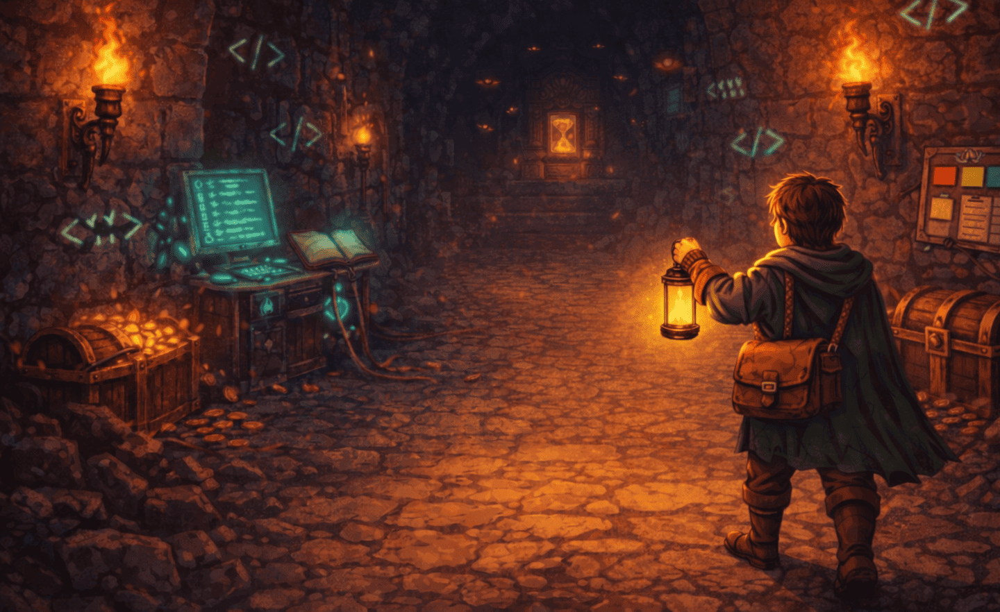

01
1DSM · 1º SEM. 2026
Scrum Dungeon

Projeto desenvolvido no primeiro semestre, utilizando uma experiência em estilo RPG para ensinar conceitos de Scrum.
Tecnologias
HTML5
CSS3
JavaScript
EJS
Minha participação
Prototipação Desktop/Mobile; efeitos sonoros e músicas; refatoração do código; organização da arquitetura; funcionalidades adicionais.
Equipe
- Enzo Suzuki Prokopas
- Alef Gabriel Oliveira
- Cauã Silva
- Igor Iansen
- Lorenzo Nogueira
- Renam Santos
- Thiago Souza Santos
- Vitor Hirch
- Patricia Rosa Maidana